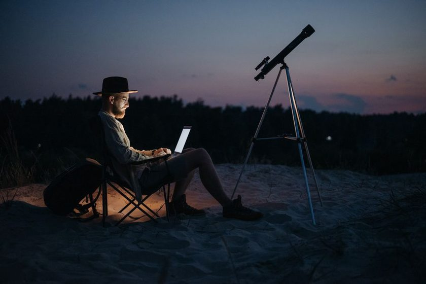
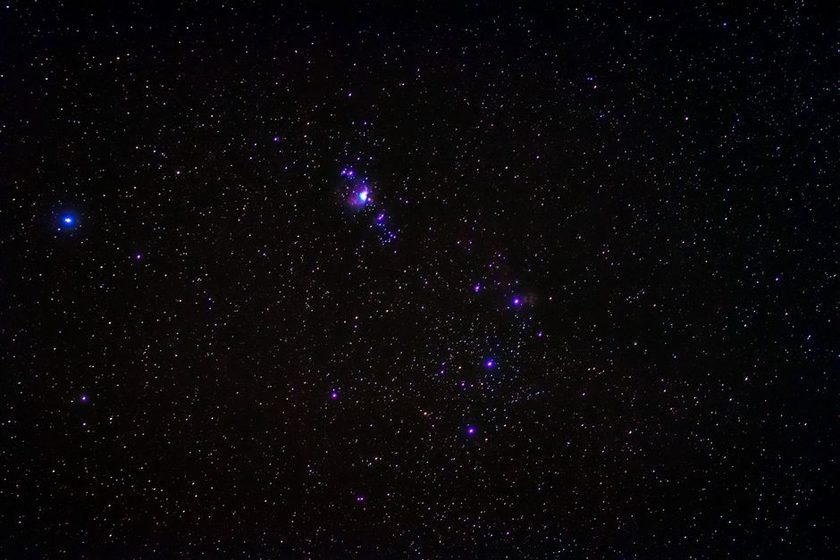
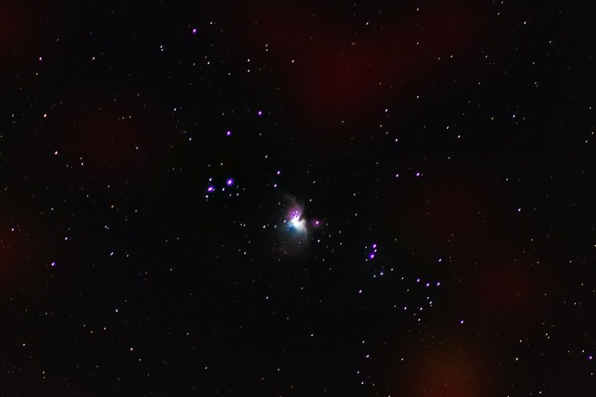
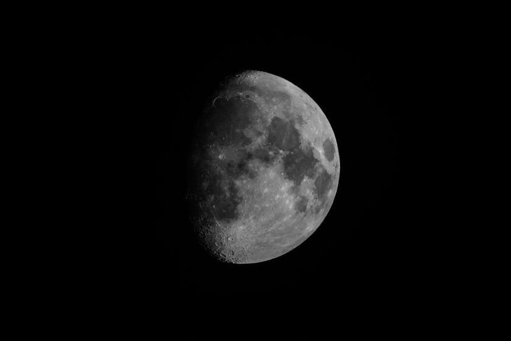
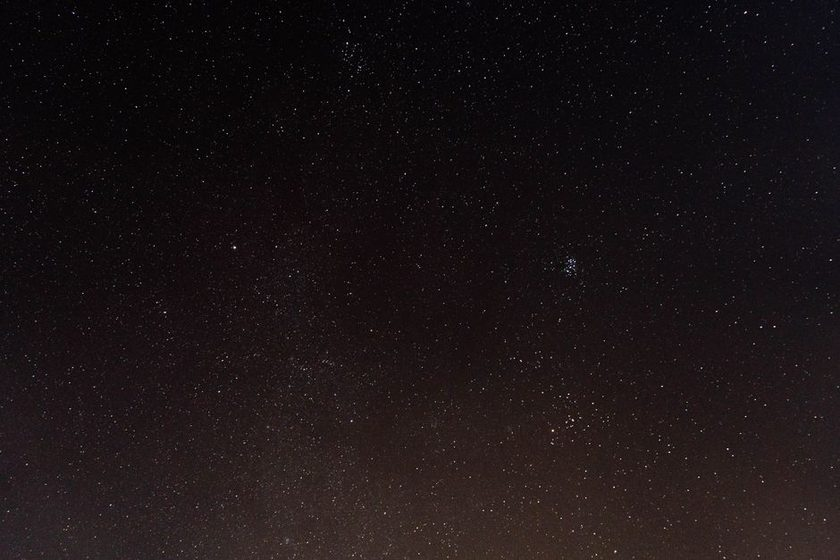

The Five-Planet Line You Can Actually See From a Driveway
Not every "planet parade" headline holds up once streetlights get involved. Here's what actually cleared the roofline and what got lost in the glow.
January 14, 2026
Chart of the month: a rough sketch of what sits above the rooftops after dark, drawn from the backyard, not a planetarium dome.
Nightglass is a notebook, not a catalog. Most of what's written here happens on a small paved patio with a streetlight two houses down and a phone flashlight for finding dropped eyepiece caps. The sky is never black — it's usually a dull orange-grey — and the point of this journal is figuring out what's still worth looking at anyway.
Below is a rough weekly reference for a mid-latitude suburban yard: what tends to clear the roofline, when it's typically worth stepping outside, and which targets hold up under wasted light. Treat the times as a starting point, not a schedule — actual timing shifts with your latitude, horizon, and the week itself.
| Object | Typical window | Direction | Naked eye? | Notes from the yard |
|---|---|---|---|---|
| Moon (waxing gibbous) | ~21:00–01:00 | East to South | Yes | Terminator ridges are the actual show, not the full disc |
| Venus | Just before sunrise | East-southeast | Yes | Brightest point of light in the pre-dawn sky most weeks |
| Jupiter | Late evening | East | Yes | Four Galilean moons show up in steadied binoculars |
| Saturn | Early evening, low | Southwest | Faint | Ring tilt is subtle without a telescope; roofline gets it first |
| Orion Nebula (M42) | After 22:00, winter months | South | Binoculars help | Best away from a direct streetlight sightline |
| A bright ISS pass | Varies by week | West to East | Yes | Worth a pass-time check the same evening, not the same month |
This journal keeps things at that scale on purpose. There's no observatory-grade advice here — just what's held up across a lot of ordinary nights with ordinary gear, written down so the next cloudy stretch doesn't erase what worked.

Not every "planet parade" headline holds up once streetlights get involved. Here's what actually cleared the roofline and what got lost in the glow.
January 14, 2026
The map said Bortle 6. The actual sky over the fence line said something closer to a bright 7. A note on trusting the map less than the horizon.
February 3, 2026
A wider aperture telescope sounds like the obvious next step. In a lit backyard, it usually isn't — here's the case for spending on glass you already own.
February 24, 2026
Full moon nights are the ones people picture, and the ones with the least to actually look at. Notes on tracking the shadow line instead.
March 10, 2026
Clear skies get wasted more often by a lack of a plan than by clouds. The short list that gets run through before the gear ever comes out.
April 2, 2026
M42 is supposed to be an easy target. It is, once you stop looking for it where the photos say it should be brightest.
April 28, 2026
Before blaming the sky, the seeing, or the eyepiece, there's one mirror alignment check that solves more blurry views than all three combined.
May 19, 2026
A pass is over in about six minutes. Here's the low-effort routine for actually being outside, facing the right way, when it happens.
June 9, 2026
Red flashlights get all the attention. The habits that make more of a difference are smaller, and easier to skip on a cold night.
July 1, 2026Nightlist grew out of the same list this journal runs through every clear afternoon: moonrise, moon illumination, which planets clear the roofline, and what's realistically visible from a fixed backyard horizon. It's a planning list, not a star map — built for one spot, not the whole sky.
New field notes and the occasional chart update, sent when there's actually something worth sending. No spam, no schedule promises.